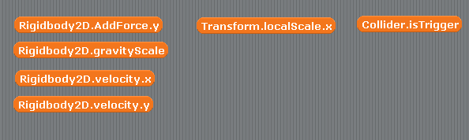

Scratch is developed by the Lifelong Kindergarten Group at the MIT Media Lab. See http://scratch.mit.edu
コンポーネント
scratch2unity では図1の様に変数でコンポーネントを表すことにしています。
図1: コンポーネント

なお scratch2unity で用意しているコンポーネントは表1に示す3つです。
各コンポーネントのプロパティやメソッドは図1における変数と対応していて、例えば「Rigidbody2D」コンポーネントの「AddForce」メソッドは上の図の「Rigidbody2D.AddForce.y」と対応しています(※)。
※ メソッド(＝ 関数)を変数で代用するのは変な感じがしますがとりあえず置いときます。
具体的な各コンポーネントの使い方については演習中を進めながら説明します。
表1: scratch2unity のコンポーネント
Rigidbody2D : ゲームオブジェクトに重さや重力、速度などの性質を与えたり、移動させたりするコンポーネント
Transform : ゲームオブジェクトに向きや大きさの性質を与えたり、回転させたりするコンポーネント
Collider : ゲームオブジェクトの当たり判定の領域の性質を与えたり、当たり判定させたりするコンポーネント